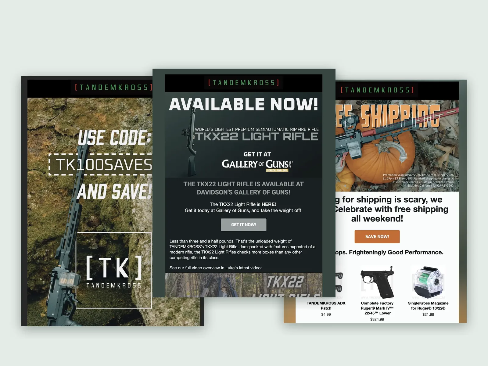

▶ EMAIL & SOCIALS
KLAVIYO • SOCIAL MEDIA
2023 → PRESENT

STRATEGY • COPY • DESIGN • PHOTOGRAPHY
Email & Social Media, Built from the Ground Up
I rebuilt my current employer's entire email marketing program, transforming it from generic transactional emails into personalized, branded journeys with a full content calendar. I handle all of it, from strategy and copy to design, photography, and the build. I also worked to elevate our social media presence to match the quality of our email.
SKILLS: Email Strategy, Automation, Copywriting, Email Design, Social Media, Photography
View Email & Socials →